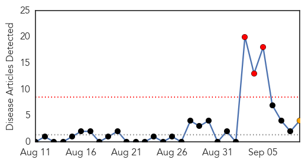
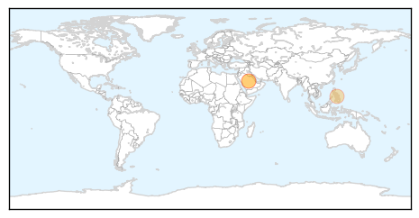
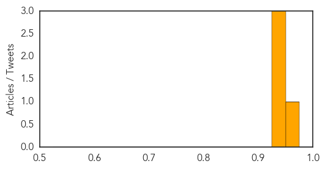
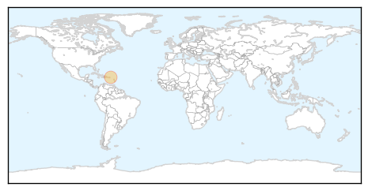

MERS
30-Day Web Trend
3 alerts, 1 warnings

30-Day Twitter Trend
2 alerts, 0 warnings

Article Locations
Article Confidences
Top Articles:
Top Tweets:
-
No tweets found for Sep 09, 2014
Chikungunya
30-Day Web Trend
0 alerts, 0 warnings

30-Day Twitter Trend
0 alerts, 0 warnings

Article Locations
Article Confidences

Top Articles:
Top Tweets:
- 0.702
- “@CIDRAP: NEWS SCAN: Saudi MERS illness; Chikungunya cases; Polio in Cameroon, Pakistan; Quick virus spread http://t.co/Ft4Cck9pW2”